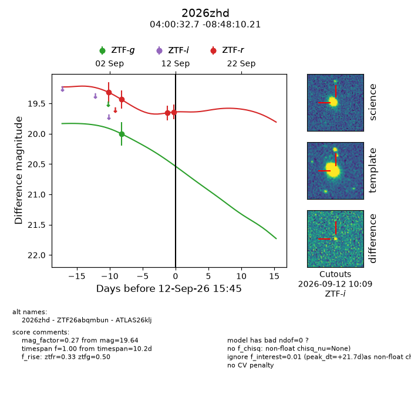
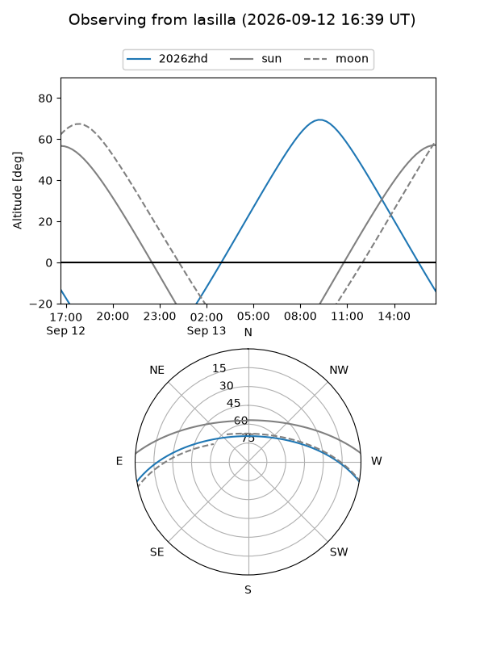
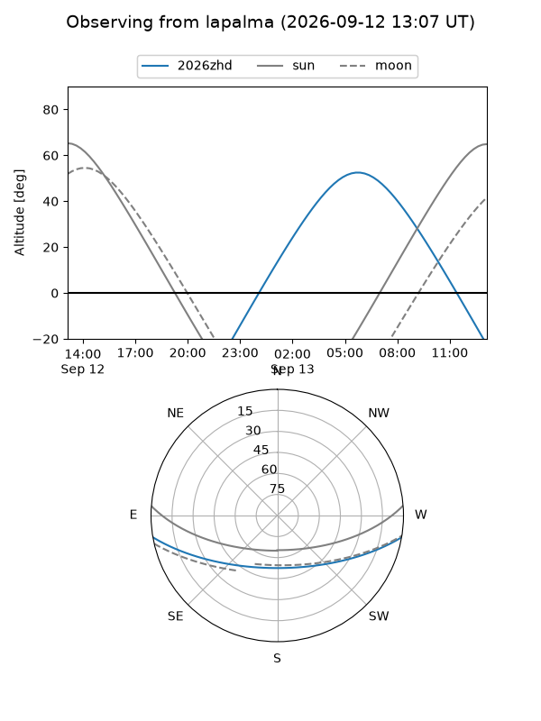
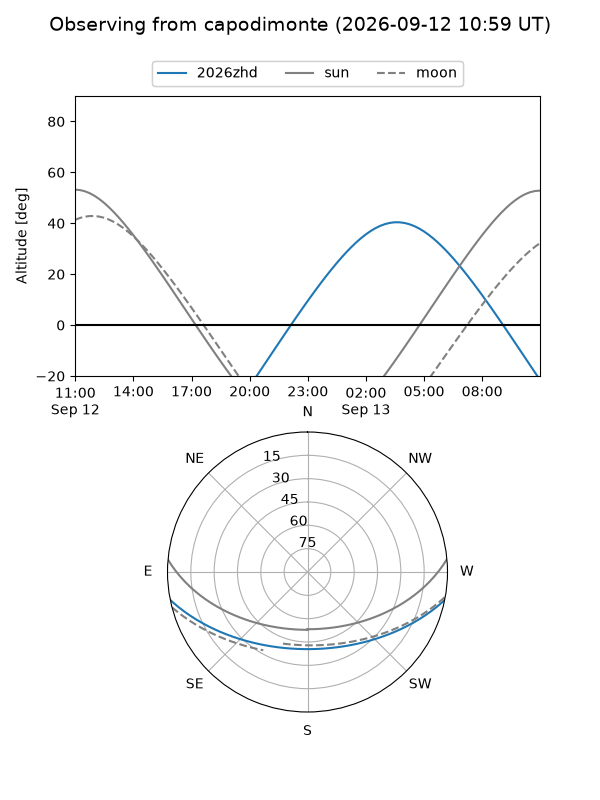
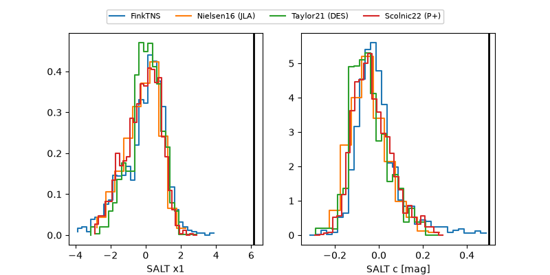

2026zhd
Target 2026zhd at 2026-09-12 15:47
Aliases and brokers:
FINK-ZTF: ztf.fink-portal.org/ZTF26abqmbun
Lasair-ZTF: lasair-ztf.lsst.ac.uk/objects/ZTF26abqmbun
ALeRCE-ZTF: alerce.online/object/ZTF26abqmbun
YSE-PZ: ziggy.ucolick.org/yse/transient_detail/2026zhd
TNS name: wis-tns.org/object/2026zhd
Direct TNS query: direct search
alt names
ZTF26abqmbun (ztf,fink_ztf)
2026zhd (tns,yse)
ATLAS26klj (atlas)
Coordinates:
equatorial (ra, dec) = 60.1364,-8.80284
equatorial (HMS+DMS) = 04:00:32.73,-08:48:10.21
galactic (l, b) = (199.7886,-41.79646)
Flags:
TNS type: nan
peak dt: +21.7
Photometry:
last ztfg=20.00, ztfr=19.64
1 ztfg, 4 ztfr detections
Lightcurve

Visibility



Additional plots
